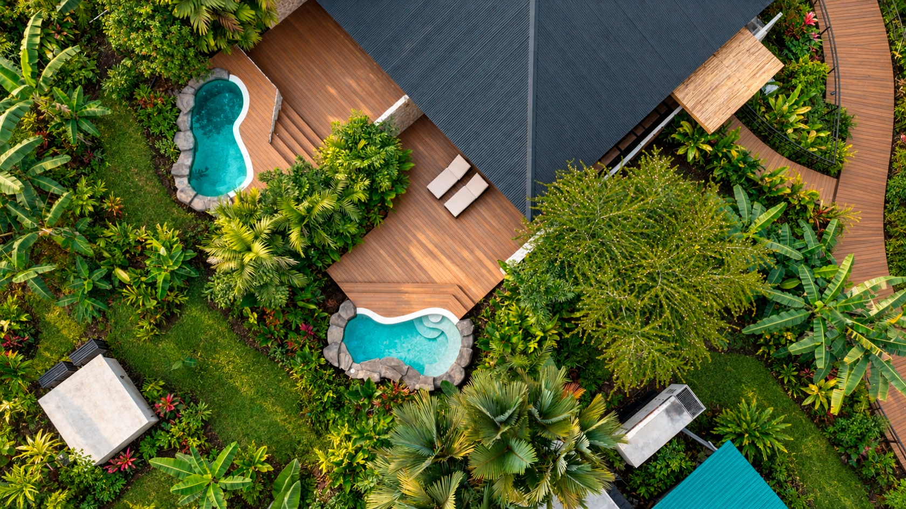
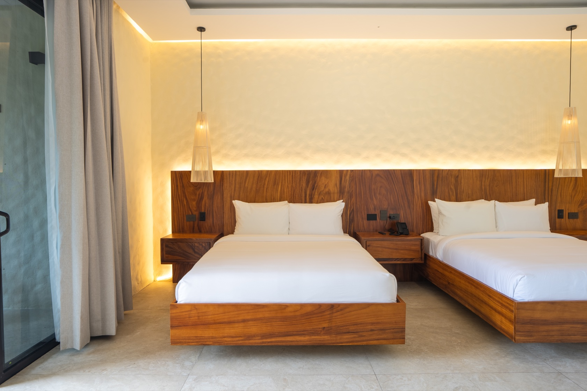

EDICIÓN PARA AGENCIAS · NOVIEMBRE 2026
RAINFOREST RESORTS
Dos resorts hermanos. La próxima historia de tus clientes en Costa Rica.



Para los viajes que diseñas
Dos estadías con identidad.
Más ideas para inspirar a tus clientes.
Estimado agente de viajes:
Nos complace presentarte Rainforest Resorts, la familia costarricense de resorts que reúne a Chachagua Rainforest Resort & Hot Springs y Arenal Rainforest Resort. Tu agencia cuenta con dos propiedades hermanas para considerar al diseñar un itinerario en Costa Rica, cada una con su alojamiento y entorno propios.
Tú conoces a tus clientes: sus intereses, expectativas y forma de viajar. Nuestros Travel Designers locales apoyan tu itinerario con opciones de alojamiento, selección de experiencias y detalles que conviene confirmar antes de cotizar. Recomienda un resort o explora una estadía en ambos; el itinerario se adapta a las necesidades de tus clientes.
A continuación encontrarás diez ideas de experiencias y fotografías seleccionadas para tu propio newsletter mensual o para una edición cada dos meses. Descarga las imágenes, elige la historia que se ajuste a tu audiencia y conserva los datos de tu agencia como llamada a la acción. Tu agencia administra su propia base de datos; no se solicita cargarla ni compartirla.
Dos propiedades para recomendar
El alojamiento adecuado para cada viajero

Chachagua Rainforest Resort & Hot Springs
Para parejas. Recomienda el Deluxe Bungalow o el Jungle Tree House para compartir tiempo juntos inmersos en el bosque.
Para grupos pequeños. Explora el Rainforest Bungalow, la River Villa y la Casita Suite; elige la distribución y ocupación que se adapten a tus clientes.
Para grupos más grandes y familias. Considera la Two Bedroom Villa, Hacienda Cercone y La Fortuna Country House para combinar espacios compartidos y privacidad. Nuestros Travel Designers pueden ayudarte a elegir la propiedad y ubicación, confirmar capacidad y revisar fotografías vigentes antes de cotizar.
Hospedaje en Chachagua
Arenal Rainforest Resort
Conoce One Bedroom Vista Arenal y Bungalow Arenal como opciones de hospedaje con identidad propia para el itinerario de tus clientes en Arenal.
Arenal Rainforest Resort comienza un nuevo capítulo tras su reciente adquisición. Durante 2026, los nuevos propietarios y su equipo han trabajado en la renovación de las primeras ocho unidades; las mejoras continuarán durante 2027.
Mientras trabajamos para llevar el resort a su mejor versión, coordina con nuestros Travel Designers la opción de hospedaje que mejor se adapte a tus huéspedes. Te ayudarán a revisar la unidad específica, las fotografías vigentes, los servicios operativos y las obras previstas para las fechas del viaje. Puede haber ruido de construcción o cambios en algunas áreas y servicios.
Hospedaje en ArenalTu selección para el itinerario
10 experiencias para proponer a tus clientes
Elige según intereses, edades, movilidad y tiempo del itinerario. Las primeras cinco se realizan en Chachagua; para huéspedes de Arenal requieren coordinar una visita a la propiedad hermana. Las otras cinco son excursiones externas desde cualquiera de los resorts.

01
Caminata diaria de naturaleza
Sede: Chachagua
Recorre el bosque con un guía y descubre plantas, sonidos y pequeños detalles que dan vida al paisaje.
Revisa los detalles →02
Tour de observación de aves
Sede: Chachagua
Lleva tu curiosidad a la reserva de Chachagua y descubre sus aves con un guía. Los avistamientos dependen de la naturaleza; no se promete una especie.
Revisa los detalles →03
Caminata nocturna por el bosque
Sede: Chachagua
Descubre el bosque al anochecer, cuando los sonidos y la observación revelan otra parte del entorno. Consulta el recorrido y las condiciones para tu grupo.
Revisa los detalles →04
Tour de café y chocolate
Sede: Chachagua
Conoce el lugar del café, el cacao y la caña de azúcar en las tradiciones de Costa Rica. Comparte necesidades alimentarias al coordinar participación y degustaciones.
Revisa los detalles →05
Tour a caballo
Sede: Chachagua
Acércate al paisaje a otro ritmo en una salida a caballo. El equipo revisará experiencia previa, requisitos de participación y recorrido antes de reservar.
Revisa los detalles →06
Caminata a Río Celeste
Sede: Tenorio
Explora el paisaje boscoso del Parque Nacional Volcán Tenorio en una caminata guiada. Consulta sendero, clima y logística completa desde tu resort.
Revisa los detalles →07
Paseo en bote por Caño Negro
Sede: Caño Negro
Observa desde el agua un entorno de humedales, con aves y vida en las riberas por descubrir. Reserva tiempo para la excursión completa y confirma condiciones operativas.
Revisa los detalles →08
Canopy en Ecoglide
Sede: La Fortuna
Descubre otra perspectiva del bosque entre plataformas y cables de un parque externo. Confirma el producto específico, los requisitos de participación y el traslado desde tu resort.
Revisa los detalles →09
Safari float en el río Peñas Blancas
Sede: Peñas Blancas
Recorre tramos tranquilos del río en una balsa guiada mientras observas las riberas. Esta flotación es una experiencia distinta del rafting en rápidos.
Revisa los detalles →10
Caminata guiada a la catarata La Fortuna
Sede: La Fortuna
Dedica tiempo a una visita guiada a la catarata La Fortuna. Consulta escalones, esfuerzo físico, entradas y la logística más adecuada para tu grupo.
Revisa los detalles →Nuestros equipos están alineando el catálogo compartido de experiencias en ambos sitios. Estos enlaces abren por ahora las páginas publicadas de Chachagua. Confirma operación, edades, requisitos, duración, guías, tarifas y transporte desde el resort elegido. El acceso entre propiedades, los traslados y las actividades no están incluidos automáticamente; no se garantizan fauna ni visibilidad del volcán.
Recursos para tu agencia
Tu próximo newsletter empieza aquí
Cada resort cuenta con un único banco de recursos en inglés. Descarga fotografías identificadas en formato WebP para sitios web y newsletters digitales, con descargas individuales, pies de foto en inglés y un texto opcional para tus clientes. El banco de Chachagua también incluye un video de Jungle Tree House. Elige imágenes que correspondan al resort y categoría que promueves. Esta selección inicial todavía no ilustra todas las experiencias recomendadas.
Banco de imágenes de Chachagua Banco de imágenes de ArenalUna pauta editorial sencilla
Para una edición mensual, presenta primero la familia de resorts y luego destaca un alojamiento y dos o tres experiencias. Para una edición cada dos meses, desarrolla con más detalle un tema de itinerario. Agrega la asesoría y el contacto de tu agencia y dirige las consultas a tu equipo.
Arenal: información para tus propuestas
La renovación se realiza por etapas y las obras de construcción o remodelación continúan durante 2027. Puede haber ruido o cambios en áreas y servicios. Antes de presentar una propuesta final, confirma categoría o unidad, fotografías vigentes, obras previstas y servicios operativos para las fechas del viaje. No presentes toda la propiedad como completamente renovada ni prometas vistas al volcán desde todas las habitaciones.
Apoyemos tu próxima propuesta a Costa Rica
Comparte el nombre de tu huésped o grupo, fechas, número de viajeros, resort o categorías preferidas y las experiencias consideradas. Nuestro equipo puede ayudarte a revisar disponibilidad, logística y una cotización para tu propuesta. Los términos comerciales, condiciones de pago y cualquier comisión se confirman por separado; este newsletter no anuncia un nuevo convenio ni programa de comisiones.
Solicita apoyo para tu propuestaRainforest Resorts · En colaboración con tu agencia